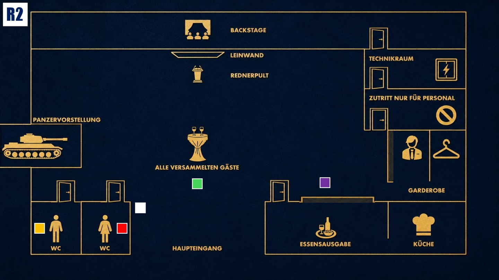

Druck aufbauen
Das Spiel wird intensiver. Nutze neue Informationen klug und bringe andere in Erklärungsnot.

Das Ziel der zweiten Runde
Behalte die Kontrolle über die Situation. Beobachte genau, wer beginnt, die Zusammenhänge zwischen Jake, dem Blackout und Coles Tod zu verstehen, und lenke den Verdacht gezielt von dir weg.
Deine Ausgangslage
Cole ist tot, und du weißt genau, was wirklich passiert ist. Du hast während des Blackouts gehandelt, weil es aus deiner Sicht notwendig war. Es musste sein. Nach außen darf davon nichts sichtbar werden. Du musst ernst und betroffen wirken, aber niemals schwach. Je mehr Fragen aufkommen, desto wichtiger wird es, dass du ruhig bleibst und andere in Erklärungsnot bringst.
Dein Beweis
Nach etwa 20 Minuten kannst du deine Beweiskarte einsetzen. Den genauen Zeitpunkt wählst du selbst. Nutze den Beweis, um Enisa unter Druck zu setzen. Er soll zeigen, dass sie nicht so vertrauenswürdig ist, wie sie wirkt. Stelle infrage, warum ausgerechnet eine Therapeutin mit fragwürdigem Hintergrund so nah an Jake steht und ob sie seine Entscheidungen beeinflusst hat.
Deine Geheimnisse
1. Die erzwungene Affäre: Du hast Luisa zur Affäre mit Jake gedrängt. Ohne diesen Fehltritt wäre Jake heute nicht so leicht angreifbar.
2. Die Erpressung: Du hast Enisa Pagany in der Hand. Du weißt von ihrer Hochstapelei und zwingst sie, Jake in deinem Sinne zu beeinflussen.
Deine Mission
1. Verdacht umlenken: Lenke den Fokus auf die Technik und damit auf Eric Dumont. Stelle infrage, ob der Blackout wirklich ein Zufall war und warum ausgerechnet Eric den entscheidenden Moment kontrollierte.
2. Enisa unter Druck setzen: Nutze deinen Beweis, um Enisas Glaubwürdigkeit zu beschädigen. Stelle sie als Person dar, die Jake beeinflusst haben könnte und mehr über seine Lage weiß, als sie zugibt.
Deine Erinnerung an 19.00 Uhr

Zum Vergrößern tippen
Du mischst dich unter die Gäste und versuchst, ruhig zu bleiben. Michael und Zoe sind auf den Toiletten, Enisa steht an der Essensausgabe. Außerdem erinnerst du dich, wie Cole aus der Richtung der Toiletten kam.
Mögliche Fragen
An Eric: „Eric, ein Blackout passiert nicht einfach so. Wer außer dir hatte Zugriff auf Technik, Ablauf und Timing?“
An Enisa: „Frau Pagany, wie neutral können Sie eigentlich sein, wenn Sie Jake so lange begleitet und beeinflusst haben?“